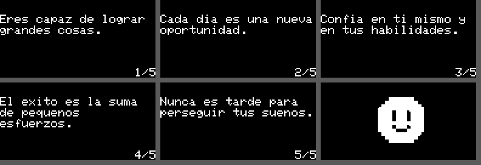

Nanai
Una máquina de acompañamiento emocional inspirada en los computadores de juguete de los años 2000. Tiene tres modos en pantalla: mensajes motivacionales, emociones y un juego cuya dificultad cambia según la emoción elegida.
- Año
- 2026
- Disciplina
- Diseño interactivo
- Rol
- Trabajo en equipo (4 integrantes)
- Herramientas
- C++, Raspberry Pi Pico 2 W, Wokwi, impresión 3D

